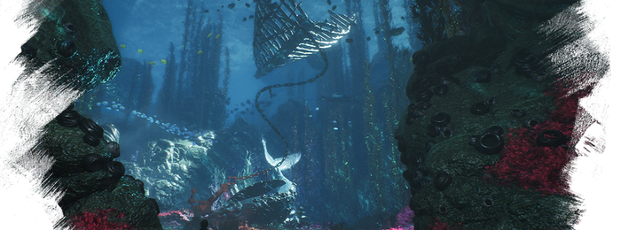
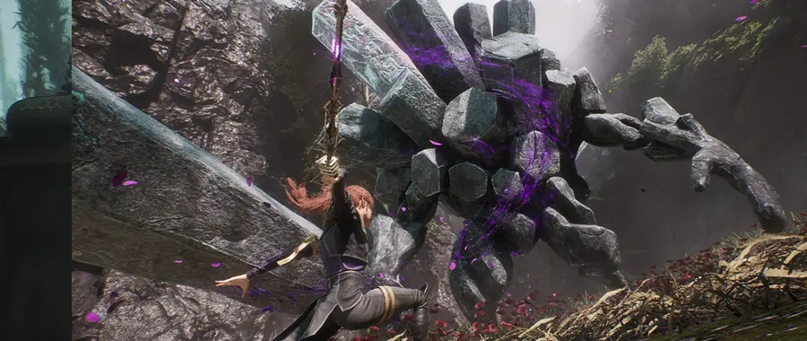
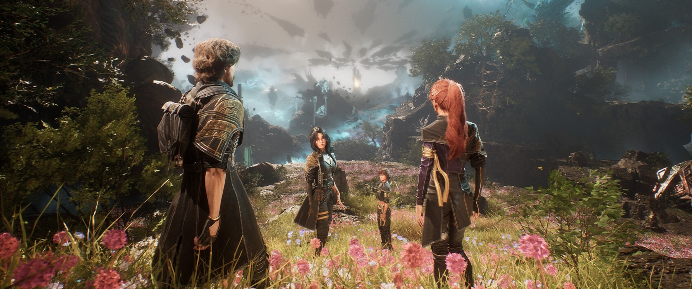

Philosophy
死亡不是终点，执念才是
《33号远征队》用一个奇幻的世界观，包裹了一个极为现实的问题：当我们失去了挚爱的人，我们要如何活下去？
绘母每年擦去一个年龄，这个设定的残忍不在于"死亡会来临"，而在于"你知道它什么时候来"。这让整个世界活在一种慢性的哀悼之中——不是面对死亡的恐惧，而是面对失去的等待，以及失去之后，生命还要继续前行的那种沉重。
游戏里真正恐怖的东西，不是绘母，不是那些画中怪物，而是一个人的内心——那个不肯放下的角落。Gustave 带着 Alicia 的记忆，走进了一场注定充满牺牲的旅途。他以为他是在为她战斗，其实他是在把自己当作她的殉葬品。
他们以为是在对抗绘母，实际上是在对抗自己心中那个不肯说再见的人。
— 33号远征队 · 深度赏析

Six Themes
六个让人久久无法平静的命题
哀悼是有期限的，执念是没有期限的
失去之后，悲痛是正当的，是必要的，甚至是尊重那份失去的方式。但当悲痛变成拒绝前行的理由，它就从哀悼变成了执念。游戏里的绘母，是这种执念走到极端的寓言：她的痛苦是真实的，但她因为无法放下，最终成了伤害所有人的存在。
人不能永远活在自己画出来的世界里
画中世界是绘母意志的具象——一个她可以掌控的空间，一个她可以按照自己的意愿来构建现实的地方。这是极度悲伤之后的一种幻想：如果真实世界太残忍，那就画一个新的。但再美的画，都不是真实。真实的生命，只在那些无法被掌控、无法被抹去的地方存在。
爱不是占有，而是允许逝去的人真正离开
Gustave 爱 Alicia，但他用记忆将她囚禁，也将自己囚禁。真正的爱是一种开放性的东西——它允许对方存在过，也允许对方已经离开。当 Gustave 最终选择放手，不是背叛，而是一种更深沉的尊重：让她以她本来的样子离开，而不是以他需要的样子留下。
知道结局，并不能让过程变得容易
每个人都知道绘母会来，每年都有人知道自己快到了那个年龄。知道死亡的时间，并不会让死亡变得更容易接受——它只会让"活着"这件事变得更加需要刻意的努力。游戏在这里触碰的，是每一个被诊断出绝症的人、每一个目送亲人倒计时的人都懂得的那种心理重量。
记忆不是真实，它是我们对真实的诠释
Gustave 记忆里的 Alicia，是他视角中的 Alicia——被爱滤镜放大的美好，被悲痛放大的遗憾。但真实的 Alicia 是一个完整的人，不只是他记忆里的那个片段。游戏暗示：我们越是紧抱记忆，就越是在扭曲那个我们声称要纪念的人的真实面貌。
拯救世界，还是拯救自己
远征队的使命是拯救世界。但游戏最终揭示的是：绘母的"恶"来自她内心的伤，而她的伤与 Gustave 的伤本质上是同一种伤。打败她，不是消灭敌人，而是直视那面镜子——看见自己的执念，并且选择：是继续被它驱动，还是让它安息。

Life Lessons
从游戏里带出来的话
-
爱一个人，不是把他们困在你的记忆里，而是允许他们真正地离去。
哀悼的终点不是遗忘，而是把对方放回他们本来的位置——那个属于过去、但同样真实的地方。
-
一个人的悲痛可以很大，大到足以变成一个世界。但那个世界，只有悲痛者一个人能活在里面。
绘母画出了一个按照自己意志运转的世界，但那个世界里没有真正的他人，只有她自己的投影。极度的悲痛，会把人变成孤岛。
-
活下去，有时候需要比死去更大的勇气。
Gustave 加入远征队，是因为这比留在家里、每天面对那张空椅子要容易得多。真正的挑战，是在远征结束后，选择回到那个空椅子边坐下来，继续活。
-
没有人能靠"理解"来绕过悲痛，必须穿过它。
Lune 用理性构建防线，Gustave 用行动麻痹感受，Maelle 用热情掩盖悲伤。没有一种策略真正有效，因为悲痛不是一个可以被解决的问题，它是一段必须被经历的过程。
-
那些让我们受苦的东西，往往也是让我们成长的来源。前提是，我们没有被它们定义。
Pictos 系统是这一点最精准的机械化表达：击败怪物，学习它的力量。但真正的应用，是对人生中那些击败过我们的事物——不是被它们囚禁，而是从中提取出继续前行的养分。
-
世界上有一种失去，是你永远无法补偿的。承认这一点，是放下的开始。
Gustave 的整个旅途，是在尝试找到一种方式来"弥补"失去 Alicia 这件事。最后他发现：无法弥补。但无法弥补，并不意味着他的生命就此失去了意义。
最后的话：
那支笔，终究停了下来

当 Gustave 站在绘母面前的那一刻，他明白了：他们不是对手，而是同一种人。两个被失去折断过的人，用不同的方式试图修复同一种破碎。绘母选择了创造一个新的世界，来掩盖那道裂缝；Gustave 选择了走进那道裂缝，看清它的真相。
游戏的结局不是胜利，而是一种放手。放手的那一刻，不是轻盈的，是沉重的，是伴随着真实眼泪的。但那也是这个故事里最接近光的时刻——因为只有当你不再紧握着那些已经离去的东西，你的手才能够接住新的。
《33号远征队》是一首写给所有无法告别的人的歌。它不劝你遗忘，它只是轻轻地说：你已经爱过了，已经悲痛过了，已经走了这么远了——现在，可以放下了。
— Expedition 33 · 深度赏析 · 全文完 —